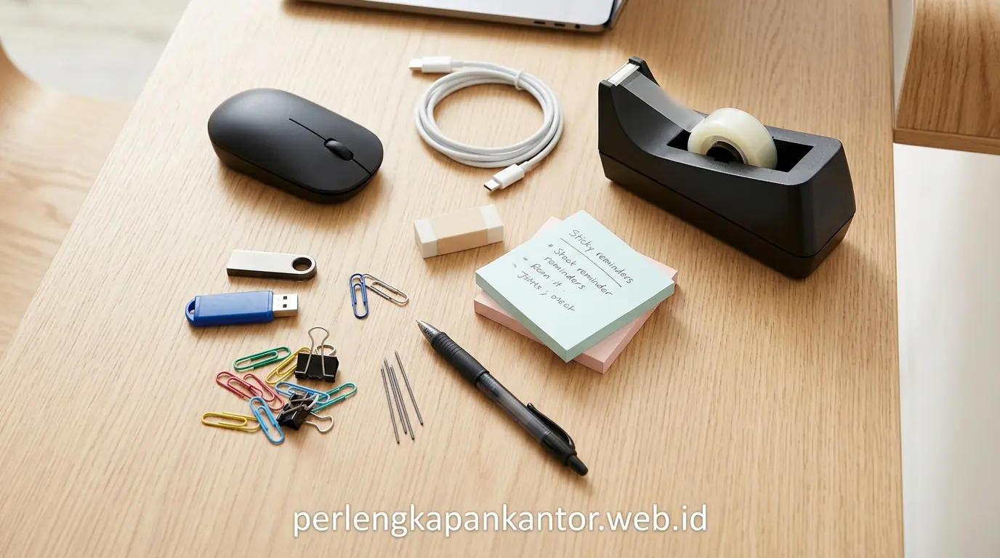

7 Barang Perlengkapan Kantor yang Paling Sering Hilang & Cara Mengatasinya
Daftar barang kantor paling sering hilang mencakup gunting, lakban, stapler, flashdisk, kabel adaptor, pulpen gel, dan spidol whiteboard akibat lemahnya sistem pencatatan logistik internal.

Pengelolaan inventaris ATK tanpa sistem pencatatan terpusat memicu kebocoran anggaran belanja perlengkapan kantor bulanan.
- Kebocoran Anggaran: Kehilangan peralatan ATK esensial yang berulang dapat menyedot hingga 15–20% dari total pengeluaran operasional General Affairs (GA).
- 7 Barang Rawan: Gunting, lakban, stapler, spidol whiteboard, pulpen, flashdisk, dan kabel konverter merupakan item yang paling cepat berpindah tangan tanpa jejak.
- Solusi Tata Kelola: Penerapan form logbook digital, kode inventaris warna per lantai, dan kuota berkala terbukti memangkas angka kehilangan hingga 80%.
- Paket Pengadaan B2B: PerlengkapanKantor menyediakan suplai ATK grosir terintegrasi dan lemari penyimpanan arsip bergaransi resmi.
- Mengapa Barang Perlengkapan Kantor Kecil Begitu Mudah Hilang dan Menguras Anggaran?
- Apa Saja 7 Barang Kantor yang Paling Sering Hilang di Tempat Kerja?
- Bagaimana Cara Menerapkan Manajemen Aset ATK Kantor yang Ketat Namun Fleksibel?
- Tabel Komparasi: Pengadaan ATK Konvensional Sporadis vs Terjadwal Terintegrasi
- Strategi Praktis Apa yang Efektif untuk Mengontrol Stok ATK di Setiap Divisi?
- Mengapa Bermitra dengan PerlengkapanKantor Memaksimalkan Efisiensi Belanja Operasional?
- FAQ: Pertanyaan Umum Seputar Pengendalian Stok ATK & Pengadaan B2B
- Kesimpulan Praktis
Mengapa Barang Perlengkapan Kantor Kecil Begitu Mudah Hilang dan Menguras Anggaran?
Barang kantor kecil mudah hilang karena dipakai bersama tanpa penanggung jawab resmi, mudah berpindah antar-meja, dan sering kali dianggap sebagai barang sepele berharga murah.
Bagi manajer operasional dan tim General Affairs (GA), fenomena "hilangnya gunting" atau "lenyapnya lakban" mungkin terdengar lucu pada awalnya. Namun, bila dihitung dalam skala korporasi dengan puluhan hingga ratusan karyawan, pengeluaran berulang untuk membeli kembali barang yang sama akan menjadi pos pemborosan finansial yang signifikan.
Berdasarkan survei Indonesian Facility Management Benchmark (2024), sebuah perusahaan dengan 50 karyawan kehilangan rata-rata 120 pulpen, 15 stapler, dan 40 gulung lakban setiap kuartal. Riset dari Corporate Asset Optimization Report (2025) menambahkan bahwa inefisiensi pengadaan ATK yang tidak terkontrol ini menambah beban kerja administrasi staf pengadaan hingga 18 jam kerja per bulan hanya untuk merekap nota pembelian darurat eceran.
Apa Saja 7 Barang Kantor yang Paling Sering Hilang di Tempat Kerja?
Tujuh barang paling rawan hilang meliputi pulpen gel, gunting & cutter, stapler & staples, lakban packing, spidol whiteboard, kabel konverter/charger, serta flashdisk dokumen.
Berikut adalah ulasan mendalam mengenai 7 barang kantor paling sering hilang serta akar penyebabnya di lapangan:
Sering dipinjam saat rapat atau menandatangani dokumen klien lalu terbawa masuk ke dalam saku baju atau tas tanpa sengaja.
Dipakai untuk membuka paket logistik ekspedisi, lalu ditaruh sembarangan di meja resepsionis atau area pantry bersama.
Peralatan filing esensial yang kerap berpindah antar-divisi saat periode laporan keuangan dan audit akhir bulan.
Habis tidak terdeteksi atau disimpan di laci pribadi divisi gudang/marketing tanpa ada pencatatan stok ulang.
Tertinggal di port CPU komputer ruang meeting setelah presentasi proyek.
Dipinjam untuk kebutuhan presentasi luar kota lalu tidak dikembalikan ke tim IT.
Berpindah meja saat cross-check berkas nota tanpa ada label penamaan divisi pemilik.
Bagaimana Cara Menerapkan Manajemen Aset ATK Kantor yang Ketat Namun Fleksibel?
Manajemen aset ATK efektif menggabungkan sentralisasi penyimpanan dalam lemari arsip terkunci, sistem barcode inventaris, dan formulir digital peminjaman alat bersama.
Kunci utama mencegah kehilangan bukanlah menciptakan birokrasi yang kaku dan memperlambat kerja staf, melainkan membangun transparansi kepemilikan aset. Ketika setiap staf menyadari bahwa sebuah barang memiliki penanggung jawab yang tercatat, rasa tanggung jawab kolektif akan terbentuk secara alami.
Pilihlah lemari arsip besi berpintu kaca atau lemari loker kompartemen khusus di area GA. Hanya staf yang ditunjuk yang berwenang membuka dan mengeluarkan stok baru sesuai jadwal mingguan yang telah disepakati.

Sentralisasi penyimpanan perlengkapan kantor dalam lemari arsip terkunci menjamin stok selalu terpantau dan terlindungi dari kehilangan.
Tabel Komparasi: Pengadaan ATK Konvensional Sporadis vs Terjadwal Terintegrasi
Tabel komparasi memperlihatkan pengadaan terjadwal B2B menghemat biaya pembelian hingga 25% dan memangkas waktu pengawasan inventaris staf operasional.
Berikut perbandingan antara pola belanja retail darurat dengan skema kontrak pengadaan grosir terencana di PerlengkapanKantor:
| Parameter Penilaian | Pembelian Sporadis (Retail / Eceran) | Pengadaan B2B PerlengkapanKantor |
|---|---|---|
| Struktur Harga Barang | Harga eceran toko ritel mahal tanpa diskon volume kuantitas. | Harga Grosir Distributor tangan pertama dengan tiering potongan volume hingga 30%. |
| Kontrol & Visibilitas Stok | Barang sering habis mendadak, memicu kepanikan saat deadline kerja. | Jadwal Re-stock Teratur berbasis konsumsi rata-rata bulanan divisi. |
| Kelengkapan Pajak & Invoice | Struk kasir sering hilang, sulit mengajukan kredit faktur pajak PPN. | Invoice Resmi & e-Faktur PPN 11% terintegrasi siap audit akuntansi. |
| Waktu Administrasi Staf GA | Menghabiskan waktu belanja ke toko fisik dan menyusun klaim kasbon. | Otomatisasi Purchase Order (PO) sekali klik dengan pengiriman langsung ke meja kantor. |
| Fasilitas Pembayaran | Wajib tunai atau kartu debit langsung di kasir toko. | Term of Payment (TOP 14–30 Hari) untuk fleksibilitas arus kas (cash flow) perusahaan. |
Strategi Praktis Apa yang Efektif untuk Mengontrol Stok ATK di Setiap Divisi?
Strategi praktis meliputi penempelan stiker label warna identitas divisi, aturan "tukar barang lama", kit starter karyawan baru, dan audit fisik bulanan berkala.
Berikut 4 langkah sederhana yang terbukti mampu menekan angka kehilangan perlengkapan kantor hingga 80%:
- Colour-Coded Labeling: Berikan stiker warna berbeda untuk setiap lantai atau divisi (misal: Merah untuk Keuangan, Biru untuk Pemasaran, Hijau untuk Operasional). Gunting atau stapler berstiker merah yang berada di meja divisi lain akan langsung teridentifikasi.
- One-In-One-Out Policy: Terapkan kebijakan di mana karyawan hanya bisa mengambil isi pulpen atau baterai baru jika menyerahkan selongsong pulpen atau baterai bekas yang telah habis.
- Onboarding Stationery Kit: Berikan satu paket wadah alat tulis komplit dengan nama karyawan saat pertama kali masuk kerja, dengan klausul bahwa penggantian sebelum masa pakai standar menjadi tanggung jawab pribadi.
- Monthly Stock Opname Ringan: Luangkan waktu 30 menit di akhir bulan untuk menghitung sisa stok fisik di lemari ATK sentral dan mencocokkannya dengan data keluar-masuk sistem.
Mengapa Bermitra dengan PerlengkapanKantor Memaksimalkan Efisiensi Belanja Operasional?
PerlengkapanKantor menyediakan solusi katalog satu pintu, harga grosir langsung distributor, garansi keaslian produk, serta pengiriman terjadwal ke seluruh cabang kantor Anda.
Sebagai penyedia solusi perlengkapan kantor B2B terkemuka di Indonesia, kami tidak hanya menjual produk berkualitas, melainkan juga membantu perusahaan Anda menyusun estimasi kebutuhan barang secara presisi. Dari kertas HVS rim, ordner arsip, alat tulis presisi, hingga furnitur lemari penyimpanan baja tahan api—semuanya tersedia dalam satu ekosistem pengadaan terpadu.
Hubungi tim konsultan kami untuk mendiskusikan kebutuhan pengadaan kantor Anda, mendapatkan potongan harga tiering korporat, atau mengirimkan dokumen Request for Quotation (RFQ) hari ini.
FAQ: Pertanyaan Umum Seputar Pengendalian Stok ATK & Pengadaan B2B
Simak rangkuman tanya jawab seputar manajemen persediaan ATK dan mekanisme order korporat berikut:
Kesimpulan Praktis
Mengatasi barang kantor paling sering hilang adalah langkah awal mewujudkan operasional kantor yang rapi, tertib, dan hemat anggaran. Beralihlah ke sistem pengadaan terpadu dan lemari penyimpanan aset yang kokoh sekarang juga.
Penulis: Tim Spesialis Perlengkapan Kantor
Divisi riset pengadaan dan manajemen logistik B2B di PerlengkapanKantor. Berdedikasi membantu ratusan korporasi mengoptimalkan efisiensi rantai pasok dan tata kelola perlengkapan kerja kantor.